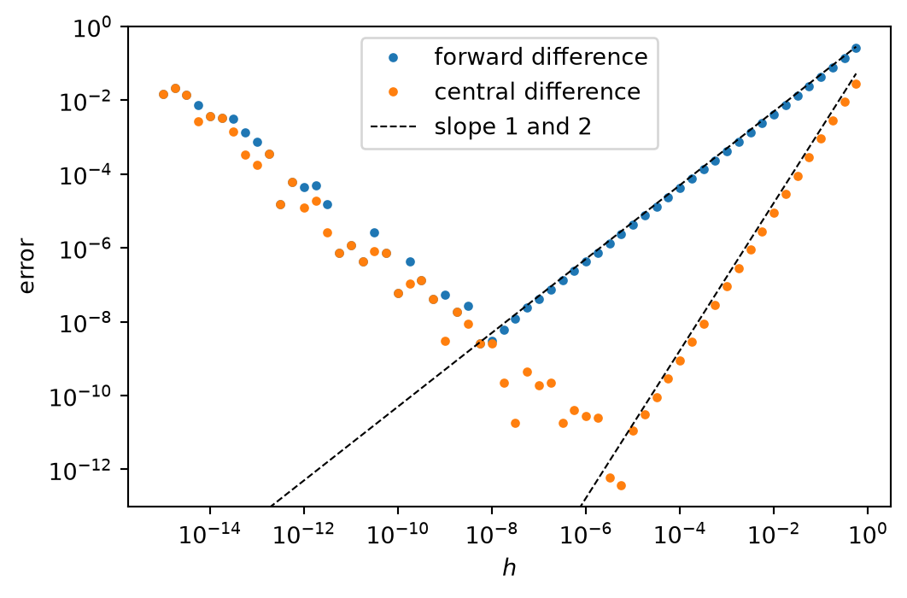
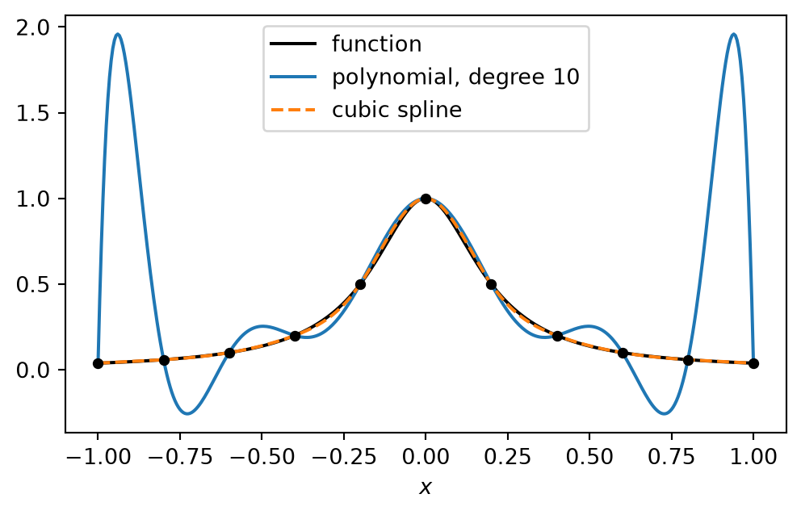

derive finite difference formulas and their truncation error from the Taylor series,
measure the order of convergence of a numerical method,
explain why a finite difference cannot be made arbitrarily accurate, and estimate the best step,
interpolate and integrate numerically and derive the error of the basic rules,
find roots with bisection and Newton’s method and explain their rates of convergence.
Numerical models are built from a small number of tools. This unit introduces the tools that come from calculus: approximating derivatives, interpolating, integrating and finding roots. All of them rest on the Taylor series. The next unit adds the tools from linear algebra and Fourier analysis.
TipAbout the code in this script
From this unit on, each computation is shown in two tabs.
Step by step is written the way you would write it yourself after the first exercise sheets: explicit loops, one operation per line, a comment on each line. Read this version first. New Python is explained below the code where it first appears.
Compact does the same in the style that experienced Python programmers use: whole NumPy arrays instead of loops, and functions from libraries such as SciPy. It is shorter and faster but hides the individual steps.
Both versions give the same results. In the PDF the two versions follow each other.
3.1 Taylor series and finite differences
3.1.1 The Taylor series
The Taylor series expresses the value of a smooth function at a neighbouring point by its value and its derivatives at \(x\):
The general term is \(\frac{h^k}{k!} u^{(k)}(x)\), with \(2! = 2\), \(3! = 6\), \(4! = 24\). If the series is stopped after the term with \(h^n\), the rest can be written as a single term,
with some \(\xi\) between \(x\) and \(x + h\) (Lagrange form of the remainder). This is what makes the dots precise: the neglected part behaves like the first neglected term, provided \(u^{(n+1)}\) is bounded. “Smooth” means that the derivatives that appear exist and are bounded.
Replacing \(h\) by \(-h\) changes the sign of the odd terms, because \((-h)^k = -h^k\) for odd \(k\):
Every finite difference formula is a combination of such series, chosen so that unwanted terms cancel.
Notation. We write \(e = O(h^p)\), “\(e\) is of order \(h^p\)”, if \(|e| \le C h^p\) for all sufficiently small \(h\), with a constant \(C\) that does not depend on \(h\). A method whose error is \(O(h^p)\) is of order\(p\). Halving \(h\) then divides the error by about \(2^p\).
3.1.2 Forward and backward difference
We solve Equation 3.1 for \(u'(x)\). Subtracting \(u(x)\) on both sides gives
The terms that are dropped when only the difference quotient is kept form the truncation error. Its leading term is \(-\frac{h}{2} u''(x)\), proportional to \(h\). The forward difference is of first order: its error is \(O(h)\).
Its error is \(O(h^2)\): second order. Halving \(h\) halves the error of the one-sided differences but quarters the error of the central difference, at the same cost of two function values.
3.1.4 Second derivative
Adding the two series instead cancels the odd terms (last column of the table, with the signs of \(u(x - h)\) reversed):
where \(\frac{h^4}{12} = 2 \cdot \frac{h^4}{24}\). Subtracting \(2 u(x)\) gives \(u(x + h) - 2 u(x) + u(x - h) = h^2 u''(x) + \frac{h^4}{12} u''''(x) + \dots\), and dividing by \(h^2\) and solving for \(u''(x)\) gives the standard approximation of the second derivative,
which is also of second order. This formula is the core of every finite difference model of diffusion.
There is a second way to obtain it, which becomes important when the diffusion coefficient varies in space. The second derivative is the derivative of the first derivative. We approximate the first derivative half-way between the grid points,
Seen from the point \(x + \tfrac{h}{2}\), the first quotient uses the two neighbours at distance \(\tfrac{h}{2}\) on either side: it is a central difference with step \(h/2\) and therefore of second order. The same holds for the second quotient at \(x - \tfrac{h}{2}\). We then take the central difference of these two values, again with step \(h/2\):
In this form the formula is a difference of two fluxes, as in the derivation of the divergence in Chapter 2.
3.1.5 Measuring the order of convergence
If the error behaves as \(e(h) \approx C h^p\), then taking the logarithm gives
\[
\log e = \log C + p \log h .
\]
In a plot with logarithmic axes the error is a straight line with slope \(p\). To compute \(p\) from two step sizes \(h_1\) and \(h_2\) we divide the two errors. The unknown constant \(C\) drops out,
If the step is halved, \(h_1 / h_2 = 2\) and \(p = \log_2 \left( e(h_1) / e(h_2) \right)\): an error that falls by a factor of 4 means second order.
Comparing the observed order with the theoretical one is the most important test of a numerical code. A bug almost always reduces the order. We test the forward and central difference with \(u = \sin\), whose derivative \(\cos\) is known, at \(x = 1\).
import numpy as np # NumPy: np.sin, np.cos, np.log, ...x =1.0# point where we approximate u'(x)exact = np.cos(x) # exact derivative of sin at xh_list = [0.1, 0.05, 0.025, 0.0125] # step sizes, each half the previous oneerror_forward = [] # empty lists, filled in the looperror_central = []for h in h_list: # h takes the values 0.1, 0.05, ... in turn forward = (np.sin(x + h) - np.sin(x)) / h central = (np.sin(x + h) - np.sin(x - h)) / (2* h) error_forward.append(abs(forward - exact)) # add the error to the list error_central.append(abs(central - exact))print(" h error forward order error central order")for i inrange(1, len(h_list)): # i = 1, 2, 3; compare step i with step i-1 log_ratio_h = np.log(h_list[i -1] / h_list[i]) p_forward = np.log(error_forward[i -1] / error_forward[i]) / log_ratio_h p_central = np.log(error_central[i -1] / error_central[i]) / log_ratio_hprint(f"{h_list[i]:7.4f}{error_forward[i]:12.2e}{p_forward:6.2f}"f" {error_central[i]:14.2e}{p_central:6.2f}")
h error forward order error central order
0.0500 2.13e-02 1.01 2.25e-04 2.00
0.0250 1.06e-02 1.01 5.63e-05 2.00
0.0125 5.27e-03 1.00 1.41e-05 2.00
import numpy as npx =1.0h = np.array([0.1, 0.05, 0.025, 0.0125]) # all step sizes at onceerror_forward =abs((np.sin(x + h) - np.sin(x)) / h - np.cos(x))error_central =abs((np.sin(x + h) - np.sin(x - h)) / (2* h) - np.cos(x))# e[:-1] is the array without its last, e[1:] without its first elementdef observed_order(e, h):return np.log(e[:-1] / e[1:]) / np.log(h[:-1] / h[1:])print("forward, observed order:", observed_order(error_forward, h).round(3))print("central, observed order:", observed_order(error_central, h).round(3))
The observed orders are 1 and 2, as derived. Moreover the forward error is close to \(\frac{h}{2} |u''(1)| = \frac{h}{2} \sin 1 \approx 0.42 \, h\), the leading term of Equation 3.3.
New Python in the step-by-step version.
[0.1, 0.05, ...] is a list, [] an empty list. error_forward.append(value) adds a value at the end of the list.
for h in h_list: executes the indented lines once for each element of the list, with h equal to that element. It replaces the counter of a while loop.
range(1, len(h_list)) produces the whole numbers \(1, 2, \dots\) up to len(h_list) - 1; len is the number of elements. h_list[i] is element number i, counted from 0: h_list[0] is 0.1.
In f"{h:7.4f}" the part after the colon sets the format: 7 characters wide with 4 digits after the decimal point. e instead of f gives the exponential notation, 1.23e-04.
3.1.6 Why the step cannot be made arbitrarily small
According to Equation 3.3 the error vanishes for \(h \to 0\). On a computer it does not, and we can estimate why.
The computer does not hold \(u(x)\) and \(u(x + h)\) but rounded values \(u(x)(1 + \delta_1)\) and \(u(x + h)(1 + \delta_2)\) with \(|\delta_{1,2}| \le \varepsilon\), the machine epsilon (Chapter 1). The computed numerator is
where we used \(u(x + h) \approx u(x)\) for small \(h\) and wrote \(|u|\) for \(|u(x)|\). The division by \(h\) is itself accurate to \(\varepsilon\), but it turns this absolute error of the numerator into an error of \(2 \varepsilon |u| / h\) in the difference quotient: the smaller \(h\), the larger the error. Together with the leading truncation error from Equation 3.3 the total error of the forward difference is bounded by
If \(u\) and \(u''\) are of order one, the best step is of the order \(\sqrt{\varepsilon} \approx 10^{-8}\), and the smallest error that can be reached is also about \(10^{-8}\): half of the 16 digits are lost.
For the central difference the numerator has the same round-off error \(2 \varepsilon |u|\), but it is divided by \(2h\), which gives \(\varepsilon |u| / h\). With the truncation error \(\frac{h^2}{6} |u'''|\) from Equation 3.5,
At \(h_{\text{opt}}\) we have \(\varepsilon |u| = \frac13 h_{\text{opt}}^3 |u'''|\), so the round-off term is \(\frac13 h_{\text{opt}}^2 |u'''|\), twice the truncation term, and
For \(u\) and \(u'''\) of order one, \(h_{\text{opt}} \sim \varepsilon^{1/3} \approx 10^{-5}\) and \(e(h_{\text{opt}}) \sim \varepsilon^{2/3} \approx 10^{-11}\).
import matplotlib.pyplot as plt # the plotting libraryx =1.0exact = np.cos(x)h_values = [] # step sizeserror_forward = [] # errors of the two formulaserror_central = []slope_1 = [] # reference lines h/2 and h^2/6slope_2 = []for k inrange(60): # k = 0, 1, ..., 59 h =10.0** (-15+0.25* k) # h = 10^-15, 10^-14.75, ..., 10^-0.25 forward = (np.sin(x + h) - np.sin(x)) / h central = (np.sin(x + h) - np.sin(x - h)) / (2* h) h_values.append(h) error_forward.append(abs(forward - exact)) error_central.append(abs(central - exact)) slope_1.append(h /2) slope_2.append(h**2/6)fig, ax = plt.subplots(figsize=(6, 3.8)) # a figure with one set of axesax.loglog(h_values, error_forward, ".", label="forward difference")ax.loglog(h_values, error_central, ".", label="central difference")ax.loglog(h_values, slope_1, "k--", lw=0.8, label="slope 1 and 2")ax.loglog(h_values, slope_2, "k--", lw=0.8)ax.set_ylim(1e-13, 1) # show errors between 1e-13 and 1ax.set_xlabel("$h$")ax.set_ylabel("error")ax.legend() # the box with the labelsplt.show()

Figure 3.1: Error of the forward and central difference for the derivative of \(\sin x\) at \(x = 1\). The error decreases with the theoretical slope until round-off takes over.
import matplotlib.pyplot as plth =10.0** np.arange(-15, 0, 0.25) # all 60 step sizes as one arrayforward =abs((np.sin(x + h) - np.sin(x)) / h - np.cos(x))central =abs((np.sin(x + h) - np.sin(x - h)) / (2* h) - np.cos(x))fig, ax = plt.subplots(figsize=(6, 3.8))ax.loglog(h, forward, ".", label="forward difference")ax.loglog(h, central, ".", label="central difference")ax.loglog(h, h /2, "k--", lw=0.8, label="slope 1 and 2")ax.loglog(h, h**2/6, "k--", lw=0.8)ax.set(ylim=(1e-13, 1), xlabel="$h$", ylabel="error")ax.legend()plt.show()
The exponents are computed from the integer counter k, as in the time loop of Exercise 1, instead of adding 0.25 repeatedly. ax.loglog plots with logarithmic axes; "." draws dots, "k--" a black (k) dashed line, lw is the line width.
Figure 3.1 confirms the estimates: the error of the forward difference stops decreasing near \(h = 10^{-8}\), at about \(10^{-8}\), that of the central difference near \(h = 10^{-5}\), at about \(10^{-11}\). Single points can lie lower, where the rounding errors happen to cancel; the estimates are bounds for the typical error. Left of the optimum the error grows like \(1/h\) and scatters, because the rounding errors \(\delta_1\), \(\delta_2\) vary irregularly from one \(h\) to the next. The figure has two lessons. First, a higher order gives a smaller error for the same step and is less affected by round-off. Second, in a convergence test the step must be neither so large that higher-order terms disturb the slope nor so small that round-off dominates.
3.1.7 Stencils of any order
The points used by a difference formula form its stencil. Formulas for any stencil and any derivative follow from one recipe, the method of undetermined coefficients. We look for weights \(w_j\) such that
Worked example. We want the first derivative at a boundary point \(x\), where only the points \(x\), \(x + h\) and \(x + 2h\) are available: offsets \(s = (0, 1, 2)\). We write the Taylor series of the three values,
and collect, for each derivative of \(u\), the factor with which it appears:
\(u(x)\)
\(h \, u'(x)\)
\(h^2 u''(x)\)
\(h^3 u'''(x)\)
\(u(x)\)
1
0
0
0
\(u(x + h)\)
1
1
\(\tfrac12\)
\(\tfrac16\)
\(u(x + 2h)\)
1
2
2
\(\tfrac86\)
The combination \(w_0 u(x) + w_1 u(x + h) + w_2 u(x + 2h)\) therefore contains \(u\) with the factor \(w_0 + w_1 + w_2\), \(h u'\) with the factor \(w_1 + 2 w_2\), and so on: each column, multiplied by the weights and summed. With three weights we can impose three conditions. The sum shall contain \(u'(x)\) exactly once and neither \(u\) nor \(u''\):
Subtracting the third equation from the second gives \(\tfrac12 w_1 = \tfrac1h\), hence \(w_1 = \tfrac{2}{h}\). The third equation then gives \(2 w_2 = -\tfrac12 w_1 = -\tfrac1h\), hence \(w_2 = -\tfrac{1}{2h}\), and the first \(w_0 = -w_1 - w_2 = -\tfrac{3}{2h}\).
The leading error comes from the last column, which was not controlled:
It is needed at boundaries, where no neighbour exists on one side (Chapter 9). Its error constant, \(\tfrac13\), is twice that of the central difference: one-sided formulas are less accurate than central ones of the same order.
The general recipe. For offsets \(s_0, \dots, s_{n-1}\) the Taylor series of each value is \(u(x + s_j h) = \sum_k \frac{(s_j h)^k}{k!} u^{(k)}(x)\). The weighted sum is
It equals \(u^{(m)}(x)\) up to terms with \(k \ge n\) if the bracket is \(m! / h^m\) for \(k = m\) and zero for all other \(k = 0, \dots, n - 1\). These are \(n\) linear equations for the \(n\) weights,
\[
\sum_{j=0}^{n-1} s_j^k \, w_j = \begin{cases} m! / h^m, & k = m, \\ 0, & k \ne m, \end{cases}
\qquad k = 0, \dots, n - 1 .
\tag{3.10}\]
For \(s = (0, 1, 2)\) and \(m = 1\) these are exactly the three equations of the worked example. The weights scale with \(1 / h^m\), so it suffices to compute them for \(h = 1\) and divide by \(h^m\). A more efficient algorithm for the same task is due to Fornberg (1988).
from math import factorial # factorial(3) = 3 * 2 * 1 = 6def stencil_weights(offsets, m):# weights for the m-th derivative on the given offsets, for h = 1 n =len(offsets) # number of stencil points A = np.zeros((n, n)) # n x n matrix filled with zeros b = np.zeros(n) # right hand side, n zerosfor k inrange(n): # row k: condition for the k-th derivativefor j inrange(n): # column j: stencil point j A[k, j] = offsets[j] ** kif k == m: b[k] = factorial(m) w = np.linalg.solve(A, b) # solve the linear system A w = breturn wprint("central, 1st derivative: ", stencil_weights([-1, 0, 1], 1))print("central, 2nd derivative: ", stencil_weights([-1, 0, 1], 2))print("one-sided, 1st derivative:", stencil_weights([0, 1, 2], 1))w = stencil_weights([-2, -1, 0, 1, 2], 1)print("5 points, 1st derivative: ", w.round(4))
The first three results reproduce Equation 3.5, Equation 3.6 and Equation 3.9 (weights \(-\tfrac12, 0, \tfrac12\); \(1, -2, 1\); \(-\tfrac32, 2, -\tfrac12\)). The fourth, \(\tfrac{1}{12}(1, -8, 0, 8, -1)\), cancels one more pair of terms and has order four. Wider stencils give higher order, at the price of more work per point and of difficulties near boundaries.
New Python.def name(arguments): defines a function: the indented lines are executed when the function is called, and return hands back the result. np.zeros((n, n)) creates an \(n \times n\) array of zeros, and A[k, j] is its entry in row k and column j, both counted from 0. The two for loops are nested: for each k the inner loop runs through all j. np.linalg.solve(A, b) solves the linear system \(A \vec w = \vec b\); how this is done is the subject of the next unit. Note that Python computes 0 ** 0 as 1, as the first row of Equation 3.10 requires.
3.2 Interpolation
Interpolation constructs a function that passes through given data points \((x_j, u_j)\). Models need it all the time: to obtain a value between grid points, to transfer fields between different grids, to find the value at the departure point of an air parcel (Chapter 14).
3.2.1 Linear interpolation
Between two neighbours \(x_j\) and \(x_{j+1} = x_j + h\) the straight line through the two data points is
At \(x = x_j\) it gives \(u_j\), at \(x = x_{j+1}\) it gives \(u_j + (u_{j+1} - u_j) = u_{j+1}\). The special case at the midpoint, \(x - x_j = h/2\), is the average \(\tfrac12 (u_j + u_{j+1})\), which is used whenever a value is needed half-way between grid points.
How large is the error? For a polynomial \(p\) of degree \(n\) through \(n + 1\) points \(x_0, \dots, x_n\) the interpolation error is
for some \(\xi\) in the interval that contains \(x\) and the data points.
NoteDerivation of the interpolation error
At a data point both sides are zero. Fix an \(x\) that is not a data point and write \(w(t) = \prod_{j=0}^{n} (t - x_j)\), a polynomial of degree \(n + 1\) with leading term \(t^{n+1}\). The function
is zero at the \(n + 1\) data points, because there \(u = p\) and \(w = 0\), and also at \(t = x\), where the last term equals \(u(x) - p(x)\). It has \(n + 2\) zeros. Between two zeros of a smooth function its derivative has a zero (Rolle’s theorem). Hence \(g'\) has at least \(n + 1\) zeros, \(g''\) at least \(n\), and \(g^{(n+1)}\) at least one, at some point \(\xi\). Now \(p^{(n+1)} = 0\), because \(p\) has degree \(n\), and \(w^{(n+1)} = (n + 1)!\), because only the leading term \(t^{n+1}\) survives \(n + 1\) differentiations. Therefore
which, solved for \(u(x) - p(x)\), is Equation 3.12.
For the straight line, \(n = 1\), the error is \(\tfrac12 u''(\xi) \, (x - x_j)(x - x_{j+1})\). Writing \(t = x - x_j\), the product is \(t \, (t - h)\) for \(0 \le t \le h\). Its derivative \(2t - h\) vanishes at \(t = h/2\), the midpoint, where the product equals \(\tfrac{h}{2} \cdot \left( -\tfrac{h}{2} \right) = -\tfrac{h^2}{4}\). Hence
Each \(L_j\) is a product of \(n\) linear factors, a polynomial of degree \(n\). At \(x = x_j\) every factor equals one, so \(L_j(x_j) = 1\). At any other data point \(x_i\) the factor \((x - x_i)\) is zero, so \(L_j(x_i) = 0\). In the sum for \(p(x_i)\) therefore only the term \(j = i\) survives, and \(p(x_i) = u_i\). For \(n = 1\) the Lagrange form is \(p(x) = u_0 \frac{x - x_1}{x_0 - x_1} + u_1 \frac{x - x_0}{x_1 - x_0}\), which is Equation 3.11 written differently.
From Equation 3.12 one would expect the accuracy to improve with \(n\), because of the factor \(1 / (n + 1)!\). On equidistant points it does not. The product \(\prod (x - x_j)\) is much larger near the ends of the interval than in the middle, and for many functions the derivatives \(u^{(n+1)}\) grow faster than the factorial. The polynomial oscillates near the ends, and the oscillations grow with \(n\). This is the Runge phenomenon.
There are two remedies. Piecewise interpolation uses polynomials of low degree between neighbouring points. Cubic splines are piecewise cubic polynomials that in addition make the first and second derivative continuous at the data points. Alternatively, the data points can be placed more densely near the ends, for example at the Chebyshev points \(x_j = \cos(j \pi / n)\); this keeps the product \(\prod (x - x_j)\) small everywhere. Models rarely have this freedom: the grid is given.
from scipy.interpolate import CubicSpline # cubic splines from SciPydef runge(x):return1/ (1+25* x**2)def lagrange(x_data, u_data, x):# value at x of the polynomial through the points (x_data, u_data) n_points =len(x_data) p =0.0for j inrange(n_points): L =1.0# L_j(x), built up factor by factorfor i inrange(n_points):if i != j: # != means "not equal" L = L * (x - x_data[i]) / (x_data[j] - x_data[i]) p = p + u_data[j] * Lreturn px_data = [] # 11 equidistant data points in [-1, 1]u_data = []for j inrange(11): x_data.append(-1+0.2* j) u_data.append(runge(-1+0.2* j))spline = CubicSpline(x_data, u_data) # the spline through the datax_fine = [] # 401 points for drawing the curvesu_exact = []u_polynomial = []u_spline = []for k inrange(401): x =-1+0.005* k x_fine.append(x) u_exact.append(runge(x)) u_polynomial.append(lagrange(x_data, u_data, x)) u_spline.append(spline(x))fig, ax = plt.subplots(figsize=(6, 3.5))ax.plot(x_fine, u_exact, "k", label="function")ax.plot(x_fine, u_polynomial, label="polynomial, degree 10")ax.plot(x_fine, u_spline, "--", label="cubic spline")ax.plot(x_data, u_data, "ko", ms=4) # data points as black circlesax.set_xlabel("$x$")ax.legend()plt.show()

Figure 3.2: Interpolation of \(1 / (1 + 25 x^2)\) through 11 equidistant points. The polynomial of degree 10 oscillates near the ends; the cubic spline does not.
The step-by-step function lagrange is a direct transcription of the Lagrange form. The cubic spline requires solving a linear system for the second derivatives at the data points; we take it from the library SciPy. CubicSpline(x_data, u_data) returns an object that can be called like a function. The compact version uses BarycentricInterpolator, a numerically more stable way to evaluate the same polynomial.
The lesson reaches beyond interpolation. Accuracy is improved reliably by refining the grid with a method of fixed, moderate order. Raising the order on a fixed grid works only under special conditions (Chapter 20).
3.3 Quadrature
Quadrature approximates an integral by a weighted sum of function values. The interval \([a, b]\) is divided into \(N\) subintervals of width \(h = (b - a)/N\), and on each the integrand is replaced by a polynomial.
3.3.1 Midpoint and trapezoidal rule
Consider one subinterval of width \(h\) with midpoint \(m\). We expand the integrand around the midpoint, \(f(m + s) = f(m) + s f'(m) + \tfrac12 s^2 f''(m) + \tfrac16 s^3 f'''(m) + \dots\), and integrate term by term from \(s = -h/2\) to \(s = h/2\). The terms with odd powers of \(s\) are odd functions and integrate to zero over the symmetric interval. For the others,
The trapezoidal rule uses the two end points instead. From the same expansion at \(s = \pm h/2\), \(f(m \pm \tfrac{h}{2}) = f(m) \pm \tfrac{h}{2} f'(m) + \tfrac{h^2}{8} f''(m) \pm \dots\), so that in the sum of the two the \(f'\) terms cancel:
Composite rules. On the whole interval we sum over the \(N\) subintervals with midpoints \(m_i = a + (i + \tfrac12) h\), \(i = 0, \dots, N - 1\), and end points \(x_i = a + i h\), \(i = 0, \dots, N\). The composite midpoint rule is \(h \sum_i f(m_i)\). In the composite trapezoidal rule every interior point \(x_1, \dots, x_{N-1}\) is the end point of two subintervals and appears twice with the weight \(h/2\):
because \(\sum_i h f''(m_i)\) is itself the midpoint rule for \(\int f''\). The same argument for the trapezoidal rule gives \(-\tfrac{h^2}{12} \big[ f'(b) - f'(a) \big]\). Each subinterval contributes \(O(h^3)\), but there are \(N = (b - a)/h\) of them, so the composite error is \(O(h^2)\): both composite rules are of second order. The error of the trapezoidal rule is twice that of the midpoint rule and has the opposite sign.
The composite error depends only on the derivative of \(f\) at the two end points. If \(f\) is periodic and the interval is one period, \(f'(b) = f'(a)\) and the \(h^2\) term vanishes. A more complete analysis (the Euler–Maclaurin formula) shows that the same holds for all higher terms, which contain \(f'''(b) - f'''(a)\), \(f^{(5)}(b) - f^{(5)}(a)\), and so on. For smooth periodic functions the trapezoidal rule is therefore extremely accurate.
3.3.2 Simpson’s rule
Opposite signs again invite a combination. Taking two thirds of Equation 3.13 and one third of Equation 3.14,
\[
\tfrac23 \left( \int f - \tfrac{h^3}{24} f'' \right) + \tfrac13 \left( \int f + \tfrac{h^3}{12} f'' \right)
= \int f + \left( -\tfrac{2}{72} + \tfrac{1}{36} \right) h^3 f'' = \int f ,
\]
the \(h^3\) terms cancel. In function values, the combination is
The next terms of both rules are odd powers of \(s\), which vanish, and terms with \(h^5\). The local error of Simpson’s rule is therefore \(O(h^5)\), and its composite form is of fourth order. Many textbooks write Simpson’s rule with the distance \(\hat h = h/2\) between neighbouring points, \(\tfrac{\hat h}{3} [f_0 + 4 f_1 + f_2]\); this is the same formula.
We test the three rules on \(\int_0^1 e^x \, \mathrm{d}x = e - 1\) with \(N = 4, 8, 16, 32\). Since \(N\) doubles, \(h\) halves, and the observed order is \(\log_2\) of the ratio of successive errors.
def midpoint(f, a, b, n): h = (b - a) / n # width of a subinterval total =0.0for i inrange(n): # subintervals i = 0, ..., n-1 m = a + (i +0.5) * h # midpoint of subinterval i total = total + f(m)return h * totaldef trapezoidal(f, a, b, n): h = (b - a) / n total =0.5* f(a) +0.5* f(b) # the two end points count halffor i inrange(1, n): # interior points i = 1, ..., n-1 total = total + f(a + i * h)return h * totaldef simpson(f, a, b, n):return (2* midpoint(f, a, b, n) + trapezoidal(f, a, b, n)) /3exact = np.e -1# integral of exp(x) from 0 to 1n_list = [4, 8, 16, 32]error_m = []error_t = []error_s = []for n in n_list: error_m.append(abs(midpoint(np.exp, 0, 1, n) - exact)) error_t.append(abs(trapezoidal(np.exp, 0, 1, n) - exact)) error_s.append(abs(simpson(np.exp, 0, 1, n) - exact))print(" N midpoint order trapezoid order Simpson order")for i inrange(1, len(n_list)): p_m = np.log2(error_m[i -1] / error_m[i]) # h halved: order = log2(ratio) p_t = np.log2(error_t[i -1] / error_t[i]) p_s = np.log2(error_s[i -1] / error_s[i])print(f"{n_list[i]:2d}{error_m[i]:9.2e}{p_m:5.2f}",f"{error_t[i]:9.2e}{p_t:5.2f}{error_s[i]:9.2e}{p_s:5.2f}")ratio = error_t[-1] / error_m[-1]print("error trapezoidal / error midpoint for N = 32:", round(ratio, 3))
N midpoint order trapezoid order Simpson order
8 1.12e-03 2.00 2.24e-03 2.00 1.46e-07 4.00
16 2.80e-04 2.00 5.59e-04 2.00 9.10e-09 4.00
32 6.99e-05 2.00 1.40e-04 2.00 5.69e-10 4.00
error trapezoidal / error midpoint for N = 32: 2.0
def midpoint(f, a, b, n): h = (b - a) / nreturn h * np.sum(f(a + h * (np.arange(n) +0.5))) # all midpoints at oncedef trapezoidal(f, a, b, n): x = np.linspace(a, b, n +1) # all n+1 end pointsreturn (b - a) / n * (0.5* f(x[0]) + np.sum(f(x[1:-1])) +0.5* f(x[-1]))def simpson(f, a, b, n):return (2* midpoint(f, a, b, n) + trapezoidal(f, a, b, n)) /3n = np.array([4, 8, 16, 32])for rule in [midpoint, trapezoidal, simpson]: errors = np.array([abs(rule(np.exp, 0, 1, k) - np.e +1) for k in n])print(f"{rule.__name__:12s} error for N = 32: {errors[-1]:.2e},"f" observed order: {np.log2(errors[:-1] / errors[1:]).round(2)}")
midpoint error for N = 32: 6.99e-05, observed order: [2. 2. 2.]
trapezoidal error for N = 32: 1.40e-04, observed order: [2. 2. 2.]
simpson error for N = 32: 5.69e-10, observed order: [4. 4. 4.]
The output confirms the orders, and also that the trapezoidal error is twice the midpoint error. A function can be handed to another function like a number: midpoint(np.exp, 0, 1, n) integrates np.exp, and inside midpoint it is called as f(m). np.log2 is the logarithm to base 2, and error_t[-1] is the last element of the list.
3.3.3 Where quadrature enters prognostic models
Time stepping. Integrating \(\mathrm{d}u / \mathrm{d}t = f(t, u)\) over one time step gives \(u(t + \Delta t) = u(t) + \int_t^{t + \Delta t} f \, \mathrm{d}t\). Every time stepping scheme is a quadrature rule for this integral. Evaluating \(f\) only at the start of the step, \(\int \approx \Delta t \, f(t, u(t))\) (the left rectangle rule, of first order), gives the forward Euler scheme Equation 1.5; the trapezoidal rule gives a scheme of second order (Chapter 5).
Finite volumes. The fluxes through the faces of a grid cell and the sources inside it are integrals (Chapter 9).
Finite elements. The entries of the system matrix are integrals over elements, evaluated with Gauss quadrature, which chooses the positions of the points as well as the weights (Chapter 19).
3.4 Root finding
Many steps of a model require the solution of a nonlinear equation \(f(x) = 0\): every step of an implicit time stepping scheme for a nonlinear problem, the saturation temperature of an air parcel, the water table in a soil column.
As an example we take
\[
\tan \lambda + 2 \lambda = 0 .
\]
Equations of this kind determine the eigenvalues of diffusion problems with Robin boundary conditions. The tangent has poles at \(\lambda = \pi/2, 3\pi/2, \dots\), where it jumps from \(+\infty\) to \(-\infty\); a root finder would take such a sign change for a root. We therefore multiply by \(\cos \lambda\) and solve the equivalent smooth equation
Its roots are those of the original equation, because at the poles, \(\cos \lambda = 0\), the new function equals \(\sin \lambda = \pm 1 \ne 0\). Reformulating a problem before solving it numerically is often the most effective step.
The first positive root lies between \(\pi/2\) and \(\pi\): there \(f(\pi/2) = \sin(\pi/2) = 1 > 0\) and \(f(\pi) = 2 \pi \cos \pi = -2\pi < 0\). Newton’s method below also needs the derivative, which by the product rule is
If \(f\) is continuous and \(f(a)\) and \(f(b)\) have opposite signs, there is a root in \([a, b]\) (intermediate value theorem). Bisection evaluates \(f\) at the midpoint \(c = (a + b)/2\). If \(f(a)\) and \(f(c)\) have opposite signs, the root lies in \([a, c]\), otherwise in \([c, b]\), and the method continues with that half.
After \(k\) iterations the interval that contains the root has the length \((b - a)/2^k\). Its midpoint, our estimate, is at most half of this length away from the root:
\[
e_k \le \frac{b - a}{2^{k+1}} .
\]
To reach a tolerance \(\tau\) we need \((b - a)/2^{k+1} \le \tau\), that is \(2^{k+1} \ge (b - a)/\tau\), or after taking the logarithm to base 2,
\[
k \ge \log_2 \frac{b - a}{\tau} - 1 .
\]
For \(b - a = \pi/2\) and \(\tau = 10^{-12}\) this is \(k \ge 40.5 - 1\), that is 40 iterations. Each iteration gains one binary digit, and \(\log_2 10 \approx 3.3\) iterations gain one decimal digit. This is linear convergence: the error bound is multiplied by a fixed factor, here \(\tfrac12\), in every iteration. The method cannot fail, but it is slow, and it does not extend to systems of equations.
3.4.2 Newton–Raphson
Newton’s method uses the Taylor series Equation 3.1. At the current estimate \(x_k\) we keep the first two terms,
which is the tangent to \(f\) at \(x_k\), and choose \(\delta\) such that the right hand side is zero: \(\delta = -f(x_k) / f'(x_k)\). The next estimate is \(x_{k+1} = x_k + \delta\):
Geometrically, \(x_{k+1}\) is the point where the tangent at \(x_k\) crosses zero.
How fast does it converge? Let \(r\) be the root and \(e_k = x_k - r\) the error. We expand \(f\) around \(x_k\) and evaluate at the root, now keeping the next term in the Lagrange form. The step from \(x_k\) to \(r\) is \(r - x_k = -e_k\):
The new error is proportional to the square of the old one: quadratic convergence. An error of \(10^{-3}\) becomes \(10^{-6}\) and then \(10^{-12}\); the number of correct digits doubles in every iteration. The argument requires \(f'(r) \ne 0\), a simple root. At a double root, where \(f\) touches zero without crossing, \(f'(r) = 0\) and Newton’s method converges only linearly.
The code finds the first root with both methods. It then repeats five Newton steps from \(\lambda_0 = 2\) and prints the error and the ratio \(e_{k+1} / e_k^2\), which according to Equation 3.16 should approach \(f''(r) / (2 f'(r))\), with \(f''(\lambda) = -5 \sin \lambda - 2 \lambda \cos \lambda\).
def f(lam):return np.sin(lam) +2* lam * np.cos(lam)def dfdlam(lam): # derivative of freturn3* np.cos(lam) -2* lam * np.sin(lam)def bisection(f, a, b, tol): fa = f(a) k =0# counts the iterationswhile (b - a) /2> tol: # midpoint not yet within tol of the root c = (a + b) /2# midpoint fc = f(c) k = k +1if fa * fc <=0: # different signs: the root is in [a, c] b = celse: # same sign: the root is in [c, b] a = c fa = fcreturn (a + b) /2, k # return two values: the root and kdef newton(f, dfdx, x, tol): k =0 step =2* tol # any value > tol, so that the loop startswhileabs(step) > tol and k <50: # stop after 50 iterations at most step =-f(x) / dfdx(x) # Newton step x = x + step k = k +1return x, kroot_b, k_b = bisection(f, np.pi /2, np.pi, 1e-12) # receive both valuesroot_n, k_n = newton(f, dfdlam, 2.0, 1e-12)print(f"bisection: root = {root_b:.12f} after {k_b} iterations")print(f"Newton: root = {root_n:.12f} after {k_n} iterations")r = root_n # the root, as referenced2f =-5* np.sin(r) -2* r * np.cos(r) # second derivative f''(r)C = d2f / (2* dfdlam(r))lam =2.0error_old =abs(lam - r)for k inrange(1, 5): lam = lam - f(lam) / dfdlam(lam) error =abs(lam - r) ratio = error / error_old**2print(f"iteration {k}: error = {error:.1e}, error / old error^2 = {ratio:.3f}") error_old = errorprint(f"predicted ratio |f''(r) / (2 f'(r))| = {abs(C):.3f}")
bisection: root = 1.836597203152 after 40 iterations
Newton: root = 1.836597203152 after 5 iterations
iteration 1: error = 8.8e-03, error / old error^2 = 0.330
iteration 2: error = 3.4e-05, error / old error^2 = 0.438
iteration 3: error = 5.2e-10, error / old error^2 = 0.445
iteration 4: error = 2.2e-16, error / old error^2 = 836.237
predicted ratio |f''(r) / (2 f'(r))| = 0.445
bisection: root = 1.836597203152 after 41 iterations
Newton: root = 1.836597203152 after 5 iterations
The errors of the Newton iteration show the squaring predicted by Equation 3.16: the exponent roughly doubles from one iteration to the next, and the ratio \(e_{k+1}/e_k^2\) approaches the predicted value. Once the error reaches the round-off level of about \(10^{-16}\) it cannot decrease further, and the ratio loses its meaning, as in the fourth iteration. SciPy’s bisection counts one iteration more than ours because it uses a slightly different stopping test. while conditions can be combined with and: the loop continues only while both are true. The second condition protects against an endless loop if the iteration does not converge. A function can return several values separated by commas; they are received as root_b, k_b = ....
The speed has a price, which is also visible in Equation 3.16. Newton’s method needs the derivative. And it needs a starting value that is close enough: the argument assumed that \(e_k\) is small, and where \(f'(x_k) \approx 0\) the tangent is nearly horizontal and the next estimate is thrown far away. In practice the two methods are combined: bisection until the interval is small, then Newton. scipy.optimize.root_scalar offers such safeguarded methods, for example method="brentq".
3.4.3 Newton’s method for systems
Newton’s method is important for a further reason: it generalises to systems. For \(N\) equations \(\vec F(\vec x) = 0\) in \(N\) unknowns, the Taylor series of each component \(F_i\) to first order is
Example. The circle \(x^2 + y^2 = 4\) and the hyperbola \(x y = 1\) intersect in four points. With
\[
\vec F(x, y) = \begin{pmatrix} x^2 + y^2 - 4 \\ x y - 1 \end{pmatrix}, \qquad
J(x, y) = \begin{pmatrix} 2x & 2y \\ y & x \end{pmatrix}
\]
and the starting point \((2, 0.5)\), Newton’s method finds the intersection near it. The exact value is \(x = \sqrt{2 + \sqrt 3} \approx 1.9319\), \(y = 1/x \approx 0.5176\).
x, y =2.0, 0.5# starting pointfor k inrange(1, 6): F = np.array([x**2+ y**2-4, # the two equations x * y -1]) J = np.array([[2* x, 2* y], # the Jacobian matrix, row by row [y, x ]]) delta = np.linalg.solve(J, -F) # solve J delta = -F x = x + delta[0] y = y + delta[1] error =abs(x - np.sqrt(2+ np.sqrt(3))) # distance from the exact xprint(f"iteration {k}: x = {x:.12f}, y = {y:.12f}, error in x = {error:.1e}")
iteration 1: x = 1.933333333333, y = 0.516666666667, error in x = 1.5e-03
iteration 2: x = 1.931852741096, y = 0.517637054822, error in x = 1.1e-06
iteration 3: x = 1.931851652579, y = 0.517638090204, error in x = 8.0e-13
iteration 4: x = 1.931851652578, y = 0.517638090205, error in x = 2.2e-16
iteration 5: x = 1.931851652578, y = 0.517638090205, error in x = 0.0e+00
Again the number of correct digits doubles in every iteration, until the round-off level is reached.
A nonlinear problem is thus replaced by a sequence of linear ones. This is how nonlinear PDEs such as the Richards equation are solved (Chapter 17), and it is one reason why the solution of linear systems, the subject of the next unit, is so central.
3.5 Summary
Finite difference formulas and their truncation errors follow from the Taylor series by combining series so that unwanted terms cancel. The forward and backward differences are of first order, the central differences for the first and second derivative of second order. For any stencil, the weights follow from a linear system.
The order of a method is measured as the slope of the error in a log–log plot, or from the ratio of the errors for two step sizes. This is the basic verification test.
Round-off limits the accuracy of a finite difference. The optimal step balances truncation and round-off error and is far larger than the machine epsilon: about \(\sqrt\varepsilon\) for the forward and \(\varepsilon^{1/3}\) for the central difference.
Linear interpolation and the midpoint and trapezoidal rules are of second order. Polynomials of high degree on equidistant points oscillate (Runge). Combining two rules whose errors have opposite signs gives a rule of higher order, such as Simpson’s rule.
Bisection converges linearly and always. Newton’s method converges quadratically near a simple root and generalises to systems, where each iteration solves a linear system with the Jacobian.
3.6 Further reading
LeVeque (2007), chapter 1, for finite difference approximations; Fornberg (1988) for stencils on arbitrary grids.
Fornberg, Bengt. 1988. “Generation of Finite Difference Formulas on Arbitrarily Spaced Grids.”Mathematics of Computation 51 (184): 699–706.
LeVeque, Randall J. 2007. Finite Difference Methods for Ordinary and Partial Differential Equations. SIAM.